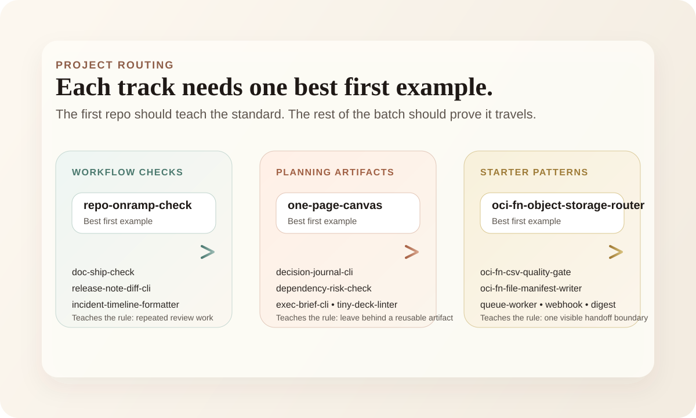

Repo Tracks Should Recommend a First Example
Grouped repo tracks get much easier to read when each track names one best first example before asking a stranger to scan the full batch.
Grouping repos is already better than dropping everything into one flat list. It is still not enough. If a stranger lands on a projects page and sees three named tracks with four or five repos each, they still have to make one more decision:
where should I start.
One good example should carry the track first
I keep wanting each track to recommend one best first example. Not because the other repos do not matter. Because a good first example teaches the rule behind the batch faster than the rest of the list can.
repo-onramp-check does that for workflow checks. one-page-canvas does that for reusable artifacts. oci-fn-object-storage-router does that for boundary-first starter patterns.
Once that first example is clear, the rest of the track reads less like inventory and more like variations on a standard.

The first example should teach the operating preference
The right first repo is usually not just the most polished one. It is the one that makes the operating preference easiest to read. I want the reader to learn something quickly:
- whether the track is about checks, artifacts, or handoff boundaries
- what level of scope the repos are aiming for
- what kind of output or next move survives the first demo
That is a better job for one well-chosen example than for five equal cards competing for attention.
A grouped page still needs a first click
This is basically the same lesson as the GitHub profile README. Grouping helps. Routing still matters.
If a projects page names the batch but never picks a first example, the reader still has to do the sorting work alone. I would rather the page make one opinionated recommendation per track and let the rest of the repos deepen the point from there.
The batch gets stronger when the first example earns the next scan
A good first example does not replace the rest of the track. It earns attention for it. Once the reader sees a workflow check that is concrete, or a fun project that leaves behind a reusable artifact, or a starter repo that stops at the right system boundary, the rest of the batch makes more sense faster.
That is when grouped repo work starts to compound. The first example teaches the pattern. The rest of the batch proves it travels.